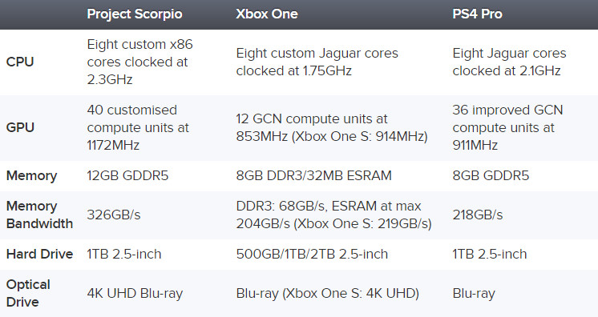

Home
Recensioni
Assassin's Creed
Horizon Zero Dawn
Resident Evil 7
Watch Dogs 2
News
Batman
Nier Automata
Project Scorpio
Valve
Ecco Le Caratteristiche Di Scorpio Messe A Confronto Con Quelle Di XBOX One E Playstation 4 Pro
Oltre ai video di presentazione delle caratteristiche tecniche di Project Scorpio, Digital Foundry ha pubblicato anche una tabella comparativa che dimostra quanto Microsoft abbia lavorato per realizzare quanto promesso: ossia la console piu' potente sul mercato. La tabella mostra le caratteristiche principali di Scorpio, affiancate a quelle di Xbox One e PlayStation 4 Pro. Basta osservare i numeri bruti per rendersi conto che Scorpio supera, e in alcuni casi surclassa, le altre due in ogni campo. In particolare va notata la grande disponibilita' di memoria, con una banda passante davvero performante. Ma bando alle ciance e guardiamo la tabella che e' autoesplicativa.
